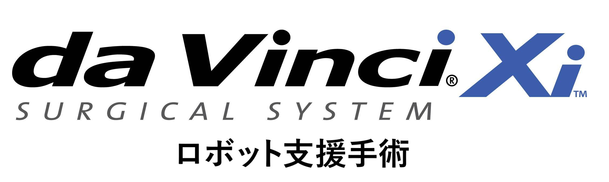

もどる
もどる
2020.9
Start
ダヴィンチとは
「ダヴィンチ」手術は、鏡視下手術と同様に患者さんの体に小さな穴を開けて行う、傷口が小さい低侵襲の手術です。この術式は出血量を抑え、術後の疼痛を軽減、機能温存の向上や合併症リスクの回避など、さまざまなメリットがあります。手術を担当する医師はサージョンコンソールと呼ばれる機械に座り、患者さんに触れずに遠隔操作によって手術が行われるのも「ダヴィンチ」手術の大きな特長です。これまでは医師が無理な体勢を強いられたり、立ったまま長時間の手術が行われてきました。しかし「ダヴィンチ」手術では、そうした医師の肉体的な負担から来る手ぶれや突発的な動きを制御する機能により安全・確実に手術を行えます。
ダヴィンチの特徴
高解像度3D画像
従来の腹腔鏡手術では、術者は2次元の画像を見ていました。ダヴィンチ・システムでは3次元立体画像を見ながら手術ができます。奥行きを感じて操作できるため、より正確かつ安全な手術が可能となりました。
鉗子の自由な動き
従来の腹腔鏡手術では手元の動きと鉗子の動きは逆方向となりましたが、ロボット手術では同方向への自然な動きが可能です。ダヴィンチ・システム独自の機能で術者の手ぶれも防止されます。操作が容易で人間の手首や指と同じように操作できます。

患者さんへの負担が軽減
ダヴィンチ手術は鏡視下手術同様、患者さんの体に1-2cmの小さな穴を開けて行う、傷口が小さい手術です。手術中の出血量が少ない、手術後の疼痛が軽減できる、合併症リスクの大幅な回避ができるといったメリットがあります。早期の社会復帰も可能です。
対応診療科
当科では重症の心臓疾患・脳血管障害等を有し他施設では治療が困難ながん患者さんの外科治療も積極的に相談に乗るようにしております。複数疾患を抱え重症度の高い患者さんへの豊富な治療実績をもとに、致命的な梗塞性合併症の発症を最小限に抑える安全な周術期管理と手術手技を確立・実践しており、これらハイリスクな患者さんに対しても専門性の高い低侵襲外科治療を提供しています。
外科へ
米国では2000年にロボットによる前立腺全摘が開始され、手術が安全性・確実性の面で従来の開腹手術や腹腔鏡下手術より優れていることが証明され、現在では前立腺摘出術の多くがダヴィンチによるロボット支援腹腔鏡下根治的前立腺摘除術で行われています。前立腺がんは、早期発見すれば根治できる可能性が高くなります。健診・人間ドック等でPSA（腫瘍マーカー）検査を受け、数値が高いようであれば早めにご受診ください。
泌尿器科へ呼吸器外科では代表的な腫瘍性疾患の肺癌（原発性・転移性）と縦隔腫瘍（良性・悪性）が、2018年に保険適用となりました。当院呼吸器外科でのダビンチ手術は、2021年9月よりスタートしています。めざすは根治性に加え、術後疼痛の軽減、早期退院、早期社会復帰です。最適な治療法を選択し提供すると同時に、謙虚さを忘れずに丁寧な説明を心掛けながら、患者さん一人一人に最適な治療を提供したいと思います。
呼吸器外科へ1973年（昭和48年）の心臓血管外科開設以来、総開心術症例は2014年1月に14000例を超え、国内有数の症例数を有する施設として順調に発展してまいりました。年間740例を超える手術件数は、全国でもトップレベルの症例数となっています。2008年秋から大動脈瘤に対するステントグラフト治療や、2013年10月から重症大動脈弁狭窄症に対する経カテーテル大動脈弁置換術（TAVI）といった患者さんの負担が少ない治療も積極的に行っています。成人の心臓・大動脈疾患、末梢血管手術すべてに対応可能です。
心臓血管外科へ